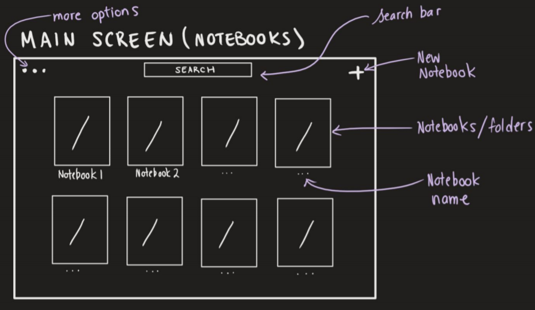

Note Taking Application ✏️
- Category: Design Challenge
- Project Date: June 2020
- Challenge:
- How would you design an app for taking notes in class? Share your thought process and design mockups. Make sure to state your assumptions.
Summary
- This design challenge was very open ended and really challenged us to put emphasis on our thought process and show how we navigated through an open ended problem. In this challenge, I designed and created a wireframe and visual mockup of a note-taking app for taking notes in class. The assumptions I made before starting the designing of this app are is that the user is taking notes on a laptop/tablet with a tablet pen and that the laptop/tablet is a touch screen device that is connected to the internet.
Process
- The process I followed was to create an analogy to base the app design off of. I thought about how I would want to navigate through this app from beginning to end as if I was a user and what I would want to see throughout the process. I started by creating the opening screen that would be seen upon launching the application. Through the starting process, I thought about how this would be similar to looking through a backpack for a notebook, but instead, through an app interface. Similar to looking through a backpack, I would want all the notebooks I have used recently to be easily seen and accessible. Unlike a backpack, an app for note-taking has the ability to be organized every time it is opened. Therefore, this screen needs to be organized, easy to navigate, simple, and intuitive.
- 
- On this screen, I first drew out the notebooks in an easy to navigate grid format with the names of each notebook labeled underneath. That way the user would be able to easily access the notebook they needed to use for a particular class without digging through a messy interface. I then walked through the process, continuing with the backpack analogy; I have dug through my backpack and found the notebook for this class, now what? (I have selected the notebook on the app, now what?) Once I have the correct notebook in my hand, I would flip to the newest page and start taking my notes. That makes sense with the backpack analogy, but, there is no ‘flipping to the newest page’ for an app, and even if there was, I would not want to do that every single time I pulled my notebook out. Following that, a thought crossed my mind: I am taking notes so I have something to study off of, how would I access the notes I have taken previously? And this thought is where the second page was created as seen in Figure 2.
Key Learnings
- how to use Figma to develop a solution to a problem with contraints
- how to choose effective and intuitive colour schemes
- how to use typography to put emphasis for readability
- how to create an intuitive user flow for user interaction
Improvements
- create a screen for the parking attendant to input credentials
- conduct research and ask users to test out its usability
- experiment with colour schemes, fonts, and more modern design choices (rounded rectangles, etc.)